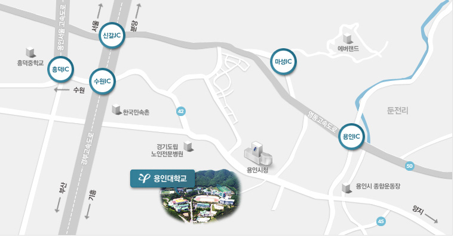

사회봉사 센터는
HOME > 센터소개 > 사회봉사센터는
용인대학교 사회봉사센터는 ‘도의상마 욕이위인(道義相磨 欲而爲人)’의 본교 교육이념을 바탕으로 나눔과 베품으로서 사회에 공헌하는
인재양성을 목표로 하여 실천하고 있습니다. 지역사회의 시니어를 대상으로 예술, 체육 등 다양한 분야에서 학생과 하나 되어 새롭게 나아가는
‘시니어칼리지’또한 지속적으로 추진하고 있습니다.
시니어칼리지에는 용인대학교의 우수한 교수진이 교육하고, 열정 가득한 학생들이 함께하는 전문적인 교육프로그램들이 있습니다.
더욱이 성공적으로 교육프로그램을 이수하는 시니어에게는 정식수료증 발급의 특전도 누릴 수 있습니다.
시니어칼리지에는 체육·문화·예술, 건강증진 프로그램 등 건강하고 활기찬 시니어 라이프를 위한 다양한 활동들이 있으며, 건강하고 맛있는
밥상이 항상 준비 되어 있습니다.
젊은 세대와 시니어 세대가 함께 나누고 성장하는 행복 공동체 건강하고 활기찬 시니어 라이프를 준비하는 희망의 디딤돌 시니어 여러분의
멋진 인생, 용인대학교 ‘시니어 칼리지’에서 지금 시작됩니다.
인재양성을 목표로 하여 실천하고 있습니다. 지역사회의 시니어를 대상으로 예술, 체육 등 다양한 분야에서 학생과 하나 되어 새롭게 나아가는
‘시니어칼리지’또한 지속적으로 추진하고 있습니다.
시니어칼리지에는 용인대학교의 우수한 교수진이 교육하고, 열정 가득한 학생들이 함께하는 전문적인 교육프로그램들이 있습니다.
더욱이 성공적으로 교육프로그램을 이수하는 시니어에게는 정식수료증 발급의 특전도 누릴 수 있습니다.
시니어칼리지에는 체육·문화·예술, 건강증진 프로그램 등 건강하고 활기찬 시니어 라이프를 위한 다양한 활동들이 있으며, 건강하고 맛있는
밥상이 항상 준비 되어 있습니다.
젊은 세대와 시니어 세대가 함께 나누고 성장하는 행복 공동체 건강하고 활기찬 시니어 라이프를 준비하는 희망의 디딤돌 시니어 여러분의
멋진 인생, 용인대학교 ‘시니어 칼리지’에서 지금 시작됩니다.
 찾아오시는 길
찾아오시는 길

 주소 : 경기도 용인시 처인구 용인대학로 134, 사회봉사센터 | 전화 : 031-8020-3397 FAX 031-8020-3400
주소 : 경기도 용인시 처인구 용인대학로 134, 사회봉사센터 | 전화 : 031-8020-3397 FAX 031-8020-3400
 지하철 이용시
지하철 이용시
분당선 이용해서 기흥역 환승 → 용인 애버라인 시청·용인대역 하차 → 교내 순환 셔틀버스 이용
 버스 시간표
버스 시간표
| 회차 | 시간 | 순환코스 | 회차 | 시간 | 순환코스 |
|---|---|---|---|---|---|
| 1 | 8시 00분 | 용인순환 | 1 | 08시 00분 | 용인순환 |
| 2 | 8시 30분 | 용인순환 | 2 | 8시 30분 | 용인순환 |
| 3 | 8시 30분 | 진입로 | 3 | 8시 30분 | 진입로 |
| 4 | 8시 40분 | 용인순환 | 4 | 8시 40분 | 용인순환 |
| 5 | 8시 40분 | 진입로 | 5 | 8시 40분 | 진입로 |
※ 교내순환 및 진입로 전용 노란셔틀버스
※ 진입로 전용 노란버스는 08 : 15부터 17 : 30까지 15분 간격으로 운행합니다.
※ 진입로 전용 노란버스 운행시간대 이후의 시간은 용인순환버스가 시청을 경유 합니다.
※ 진입로 및 용인순환버스는 학교 출발 시간 기준으로 시내교통상황에 따라 시간변동(5분~10분)이 있을 수 있습니다